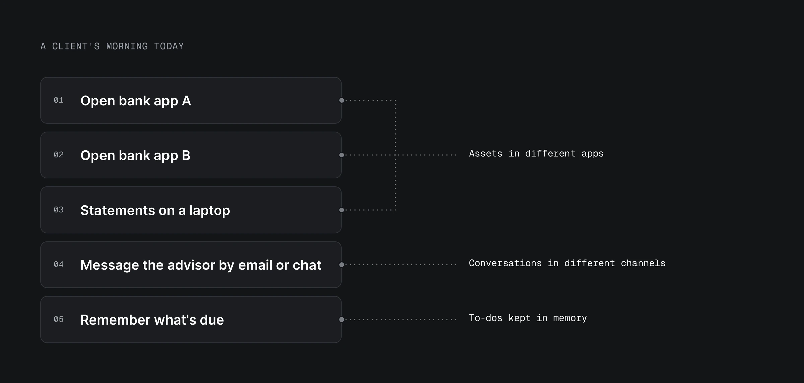
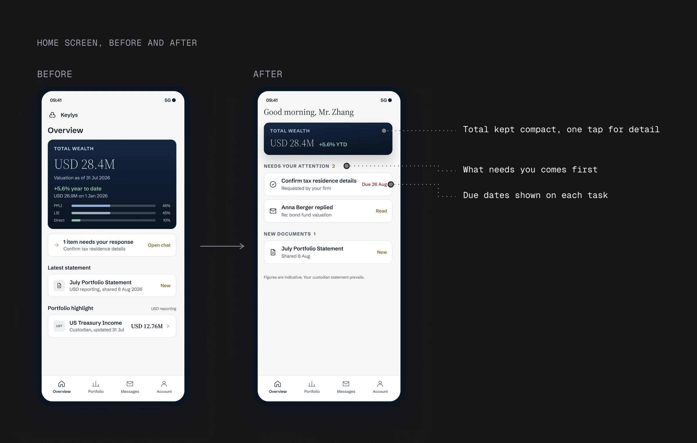
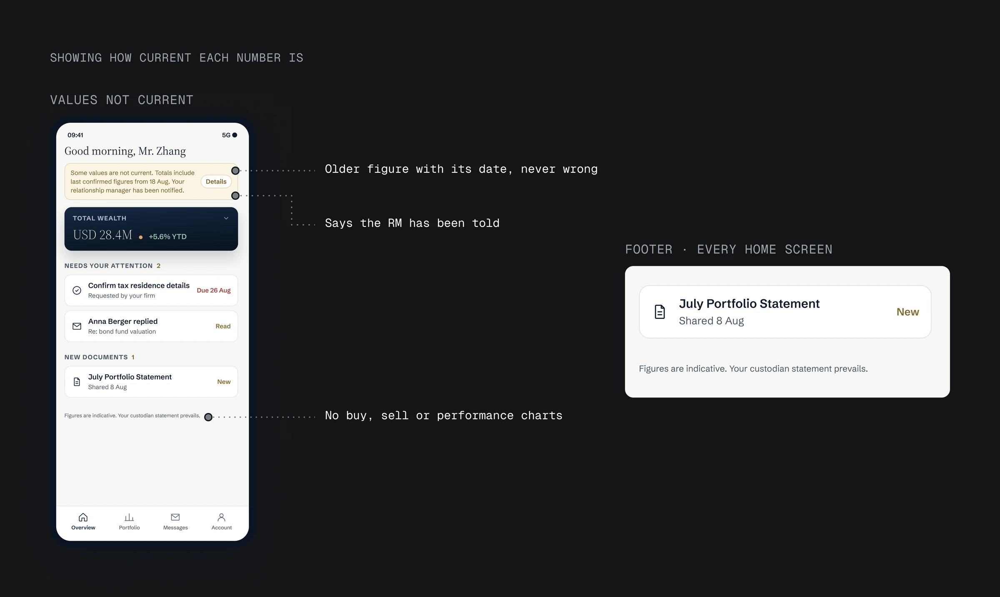
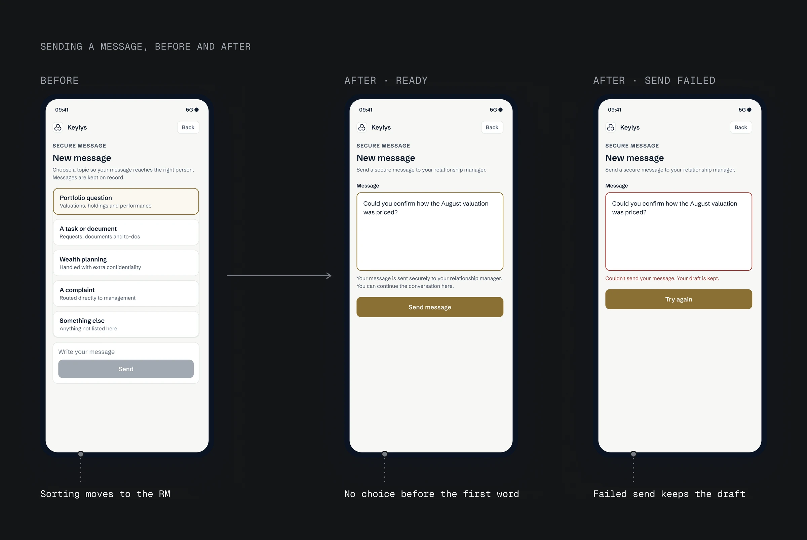
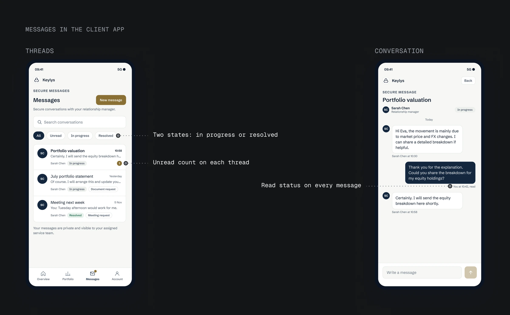
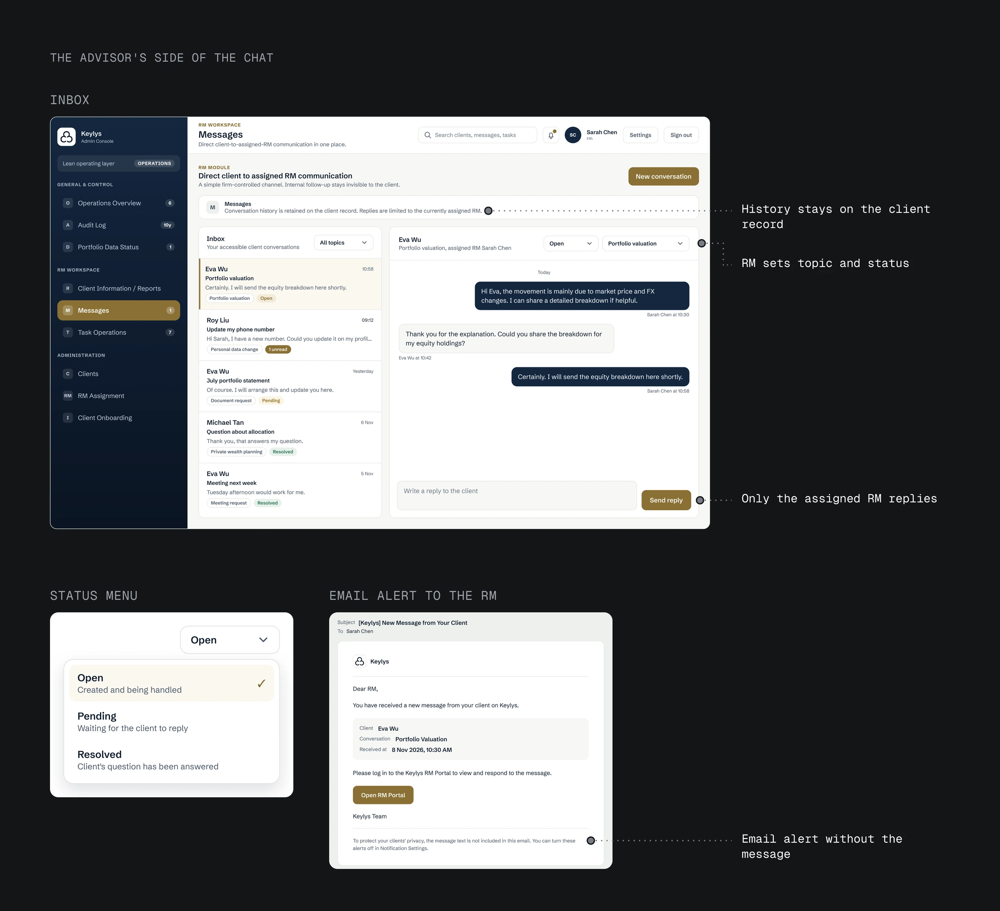

02 · Context
Assets, messages and to-dos lived in different places
A private-wealth firm wanted one app for its high-net-worth clients: no more opening each bank's app, and no more logging in on a computer. In 200 pieces of client feedback, clients described the same morning. They open one bank's app, then another. Statements wait on a laptop. Questions for their relationship manager (RM) go by email or a chat app, depending on the day. Whatever is due, a form to confirm or a document to sign, they have to remember themselves.
Three things were scattered: the assets, the conversations and the to-do list.

The first phase is read-only. There is no trading, no payments and no custody of assets. Nothing may look like investment advice: there are no buy or sell buttons, and every page says "Figures are indicative. Your custodian statement prevails."
02 · Context
Assets, messages and to-dos lived in different places
- A private-wealth firm wanted one app for its high-net-worth clients: no more opening each bank's app, and no more logging in on a computer.
- In 200 pieces of client feedback, clients described opening several bank apps, reading statements on a laptop and messaging their RM by email or chat.
- Three things were scattered: the assets, the conversations and the to-do list.
03 · Insight
Clients first check what needs them, then their balance
The same feedback showed what clients look for first: is there anything for me? A task, a new statement, or a reply from their RM. Only after that did they want the total.

The previous design did the opposite. Total wealth filled the top of the screen, and the one item that needed a response came fourth.
I moved "Needs your attention" to the top, under a compact total. Each task shows its due date, next to each new reply from the RM. New documents come next, and details of the total are one tap away. When nothing is due, the greeting changes to "All settled" and the full total moves up.
I also tried keeping the total on top with a badge for tasks. A badge still asks the client to go looking. The price of the new order is that on busy days the total is no longer the biggest thing on screen. Clients who want the breakdown tap once.
03 · Insight
Clients first check what needs them, then their balance
- The same feedback showed what clients look for first: is there anything for me?
- The previous design did the opposite.
- I moved "Needs your attention" to the top, under a compact total.
- Each task shows its due date, next to each new reply from the RM.
04 · Late data
When bank data is late, show the last confirmed figure and its date
The firm's hardest rule is that a client never sees a wrong number. Bank data arrives once a day, and sometimes a value fails the firm's checks. The app still has to show something.
A new value with a warning still puts a doubtful number in front of the client. Hiding the value makes it look like money is missing. The last confirmed figure, labelled with its date, is both correct and complete, so that is what the app shows.
Every total shows when it was valued, and a banner explains why some figures are older. A fix can take days, so the banner stays until the data is confirmed again.

04 · Late data
When bank data is late, show the last confirmed figure and its date
- The firm's hardest rule: a client never sees a wrong number.
- Bank data arrives once a day, and sometimes a value fails the firm's checks.
- A warning still shows a doubtful number; a blank looks like missing money.
- The app shows the last confirmed figure with its date, and a banner until the data is confirmed again.
05 · Messages
Clients just write, and the RM sorts the message
The firm sends complaints to a separate team, so my first design asked clients to pick one of five topics before writing. In the product team's review of the first build, the cards read like a support ticket: the client had to sort the message for the firm before saying a word.
The test: nothing should stand between the client and their first word. Optional topics or a single complaint flag still ask the client to decide first. A plain message passes, so a message is now one field and a Send button, and a failed send keeps the draft.

The sorting moved to the RM, who has the context. The RM now spots a complaint and passes it on, which keeps the firm's rule; testing will show whether RMs keep up. Since then, early in a flow I ask who has the context to do each step.

05 · Messages
Clients just write, and the RM sorts the message
- The firm routes complaints to a separate team, so my first design asked clients to pick one of five topics.
- In review, the cards read like a support ticket.
- Optional topics or a complaint flag still make the client decide first, so a message is now one field and Send.
- Sorting moved to the RM, who has the context.
06 · RM Portal
Only the assigned RM replies, all on record
The client side only works if messages can't sit unseen, so I designed the RM's side too.
Replies could come from a shared team inbox where any RM answers, or only from the client's assigned RM. Only the client's assigned RM replies, because in the first phase each client's relationship is with one RM, not a team.
- One inbox with unread counts, filters by topic and status, and search.
- The RM sets the topic and status, so sorting happens where the context is.
- History stays on the client's record. When a client moves to another RM, an admin makes the change and states why.
- Email alerts say a message is waiting, without its content, so the text never leaves the firm's system.
When the assigned RM is away, the client waits. A backup RM is planned for a later phase.

06 · RM Portal
Only the assigned RM replies, all on record
- The client side only works if messages can't sit unseen, so I designed the RM's side too.
- Replies could come from a shared team inbox where any RM answers, or only from the client's assigned RM.
- Only the client's assigned RM replies, because in the first phase each client's relationship is with one RM, not a team.
- One inbox with unread counts, filters by topic and status, and search.
07 · Scope
Phase one connects one bank, so every total shows how current it is
The first phase connects one bank, where most of the firm's clients hold their assets, and its data updates once a day. A client with assets at other banks won't see their full total until those banks are added in the next phase.
The app is in testing with the firm. In testing I would measure:
- Whether a client clears their to-dos within 30 seconds of opening.
- Whether they can say "as of when" for any number without help.
- What share of client messages arrive in the app instead of by email or chat.
07 · Scope
Phase one connects one bank, so every total shows how current it is
- The first phase connects one bank, where most clients hold their assets, with data once a day.
- The app is in testing with the firm.